Replacing Sample Pump Valve Assembly
This topic includes information about how to replace Sample Pump Valve Assembly.
Perform this procedure to mitigate the following issues:
- Valve failure
- Priming failure
- Dispense failure
- Internal wash monitor failure
- Pressure sensor calibration failure
The Sample Pump Valve Assembly Kit includes:
- Valve and Cable Connector
- Valve Adapter/Block
- Valve Screws
- Valve Adapter Screws
- O-rings
Tools Required:
- Small Phillips or flat head screwdriver
- 9/64 hex driver
- 3/32 hex driver
Caution: To prevent damage to the Fluidics Interface PCB and Pressure Sensor Interface PCB, you must turn off the instrument to install the pump valve. Turning off “All DC Power (except CPU and reagent coolers)” at the Power Distribution PCB will
NOT shut off the power to the Pressure Sensor Interface PCB.
Caution: Servicing the instrument involves potential risks for pinch and puncture, electrical shock, and exposure to hazardous materials. You must mitigate these risks by taking appropriate countermeasures. Use personal protective equipment (PPE) while performing this procedure.
Important: To avoid buffer contamination and damage to the sample pump components or interface PCBs, handle the pump valve with care.
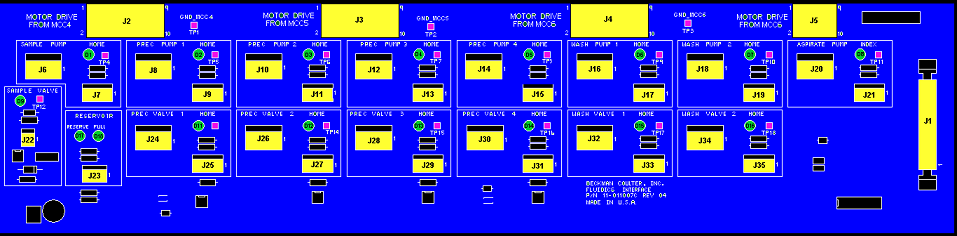
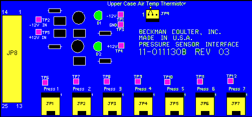
- Prepare the instrument for pump pressure sensor replacement.
- On the Main Menu select .
- Enter Access2Admin or Access2Support and select OK.
- Wait for the instrument to shut down.
- Turn off the power switch.
- Open the upper left cover of the instrument.
- Insert the cover interlock bypass tool into the left cover interlock switch.
- Locate the sample pump. Refer to
Fluidics Module Operating Principles for more location details.
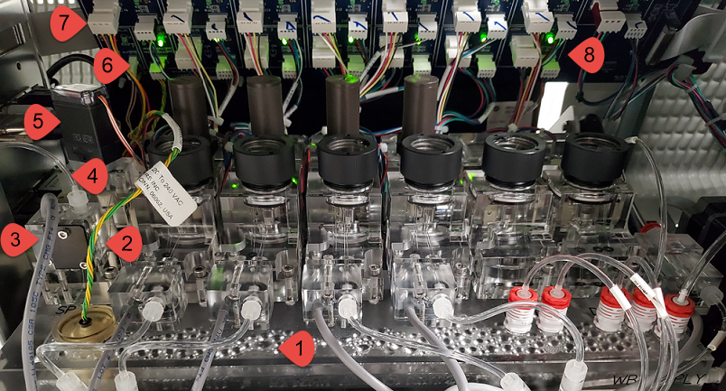
1 Wash Buffer Reservoir Manifold 2 Sample Pump 3 Sample Pump Pressure Sensor 4 Sampe Pipettor Tubing 5 Sample Pump Valve 6 Sample Pump Valve Connector J22 7 Sample Pump Motor Connector J6 8 Fluidics Interface PCB 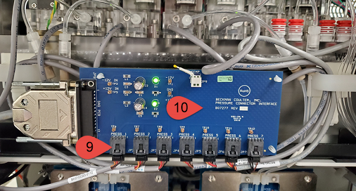
9 Sample Pump Pressure Sensor Connector JP1 10 Pressure Sensor Interface PCB - Remove the sample pump.
- Put a paper towel or absorbent material under the sample probe tip to catch the draining wash buffer.
- Disconnect the sample pipettor fluidics tubing from the pump pressure sensor.
- Use a 9/64 hex driver to unscrew the sample pump on the wash buffer reservoir manifold.
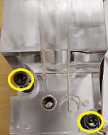
- Disconnect pump motor J6 from the Fluidics Interface PCB.
- Disconnect pump valve connector J22 from the Fluidics Interface PCB.
- Disconnect pressure sensor JP1 from the Pressure Sensor Interface PCB.
- Remove the sample pump from the wash buffer reservoir manifold and place it onto a work bench.
Note: To have enough space to remove the sample pump, you may need to remove some connectors or cables from the left card cage area.
- Clean the sample pump wash buffer manifold area for any wash buffer spills or crystallization.
- Remove the valve and the valve adapter or block.
- Use a small Phillips or flat head screwdriver to unscrew the valve and remove it from the pump.
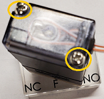
- Use a 3/32 hex driver to unscrew the valve adapter or block from the pump .
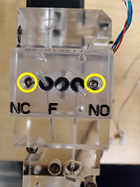
- Use a small Phillips or flat head screwdriver to unscrew the valve and remove it from the pump.
- Install the sample pump valve and valve adaptor or block.
- If they have not been pre-installed, insert the o-rings into the valve adapter or block. Be sure they are aligned to the fluidic paths and do not block the paths or lines of the pump or manifold.
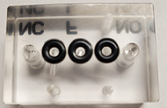
- Align the adapter or block to the sample pump. Be sure the o-rings do not block the fluidics lines of the pump manifold.
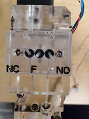
- Secure the block in place.
- Insert the o-rings into the valve. Be sure they do not block the fluidics paths or lines of the valve.
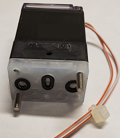
- Align the valve to the adapter block and secure the valve in place.
Note: Be sure to align the valve so that the cable faces the NO side of the valve adapter or block.
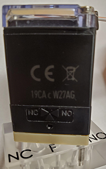
- If they have not been pre-installed, insert the o-rings into the valve adapter or block. Be sure they are aligned to the fluidic paths and do not block the paths or lines of the pump or manifold.
- Reinstall the sample pump.
- Place the pump back into the wash buffer reservoir manifold. Be sure it is aligned to the manifold.
Note: If you had to remove some connectors or cables from the left card cage area to have enough space to remove the sample pump, reconnect those connectors and cables.
- Screw the pump in place.
- Connect the pump motor connector to J6 on the Fluidics Interface PCB.
- Connect the pump valve connector to J22 on the Fluidics Interface PCB.
- Connect the pressure sensor connector to JP1 on the Pressure Sensor Interface PCB.
- Connect the sample pipettor tubing to the pump pressure sensor.
- Be sure all pump connections and components have been secured in place.
- Place the pump back into the wash buffer reservoir manifold. Be sure it is aligned to the manifold.
- Turn on the instrument power.
- Prime the instrument and check for leaks.
- Calibrate the pressure sensor. Refer to Calibrating Pump Pressure Sensors (Sample and Precision).
- Remove the interlock cover bypass tool from the upper left interlock switch.
- Close the upper left cover.
- Initialize the instrument.
- Perform verification. Refer to Verification of Service Repair.